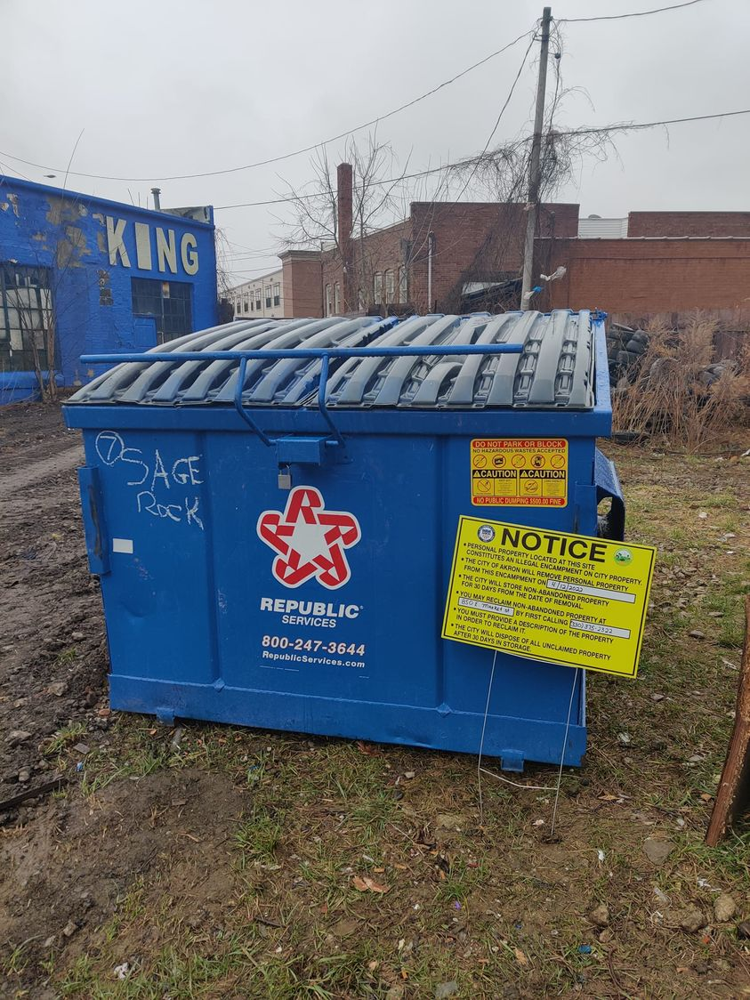

Timeline photos
Hey look. @[100064805494040:2048:City of Akron, Ohio - Mayor's Office] put one of those homeless camp sweep signs on my dumpster that I use to throw away trash from homeless people.
Make no mistake, this is not about them trying to be humane to people. All it is about is that they hate homeless people and they want to eradicate them. Whenever anyone does anything to help a homeless person in Akron Ohio they are an enemy of the city.